Once the bulk of the fluid has heated up to its saturation temperature, the boiling regime enters saturated nucleate boiling and eventually two-phase forced convection (Figure 6.1). We once again want to be able to find the wall condition for this situation; e.g., wall temperature for a given heat flux. This section references various models for heat transfer within this regime. The major recommendation is to use the Chen correlation (1966), because it provides a good fit to data, and is well-behaved in the asymptotic limits. One should note that the heat transfer coefficient is so large that the temperature difference between the wall and the bulk fluid is small allowing for large errors in the prediction, without serious consequences.
The saturated nucleate boiling and two-phase forced convection regions may be associated with an annular flow pattern. Heat is transferred by conduction or convection through the liquid film and vapor and is generated continuously at the liquid film/vapor core interface as well as possibly at the heat surface. Extremely high heat transfer coefficients are possible in this region; values can be so high as to make accurate assessment difficult. Typical figures for water of up to 200 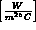 have been reported.
Following the suggestion of Martinelli, many workers have correlated their experimental results for heat transfer rates in the two-phase forced convection region in the form:
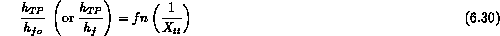
where (and 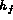 ) is the value of the single-phase liquid heat transfer coefficient based on the total (or liquid component) flow and 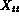 is the Martinelli parameter for turbulent-turbulent flow. A number of relationships of the form of this equation have been proposed and have been extended to cover the saturated nucleate boiling region. These correlations do, however, have a high mean error ( 30 Chen (1966) has proposed a correlation which has been generally accepted as one of the best available. The correlation covers both the saturated nucleate boiling region and the two-phase forced convection region. It is assumed that both nucleation and convective mechanisms occur to some degree over the entire range of the correlation and that the contributions made by the two mechanisms are additive:
where 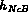 is the contribution from nucleate boiling and the contribution from convection through the liquid film. An earlier, very similar approach which has been used successfully for design in the process industries over a number of years was given by Fair (1960).
In the Chen correlation, , the convective contribution is given by a modified Dittus Boelter form,
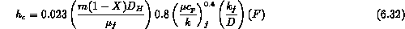
The parameter F is a function of the Martinelli parameter, (Figure 6.6). The equation of Forster and Zuber (1974), was taken as the basis for the evaluation of the "nucleate boiling" component, . Their pool boiling analysis was modified to account for the thinner boundary layer in forced convective boiling and the lower effective superheat that the growing vapor bubble sees. The modified Forster-Zuber equation becomes:
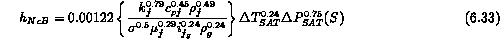
where S is a suppression factor defined as the ratio of the mean superheat seen by the growing bubble to the wall superheat 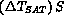 is represented as a function of the local two-phase Reynolds number 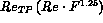 (Figure 6.7).
Curve fits to the functions shown in these figures and F and S respectively are:
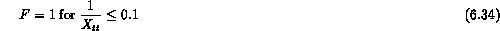
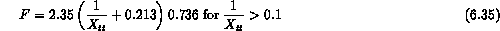
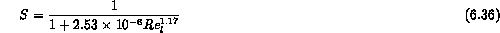
This correlation fits the available experimental data remarkably well (with a standard deviation of 11 To calculate the heat transfer coefficient 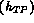 , for a known heat flux (q), mass velocity and quality the proposed steps are as follows:
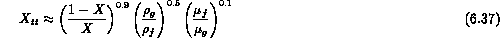
The correlation developed by Chen is the best available for the saturated forced convective boiling region in vertical ducts and is recommended for use with all single component non-metallic fluids.
The final point to emphasize with the Chen correlation is that it can be used over the whole region of saturated nucleate boiling and two-phase forced convection. In fact because it has the proper asymptotic limits as X approaches zero or one, one can extend its use into the subcooled boiling region with X' substituted for  . In this way the original energy balance for the one-dimensional flow in the channel can be consistently used from subcooled single phase heat transfer to saturated nucleate boiling and two-phase forced convection. Consistency in the predictive methodology is a key benefit of such an approach.
. In this way the original energy balance for the one-dimensional flow in the channel can be consistently used from subcooled single phase heat transfer to saturated nucleate boiling and two-phase forced convection. Consistency in the predictive methodology is a key benefit of such an approach.
References